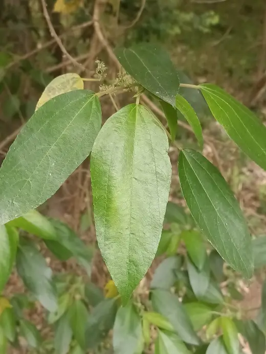

Wild fruit · All year
Native mulberry
Pipturus argenteus
Also called Native mulberry
Native mulberry is a wild fruit you can forage all year round in Subtropical east coast and Tropical north. Shrub with soft, silvery-backed leaves and small white bumpy berries; no sting.

When is native mulberry in season in Australia?
Native mulberry is usually in season all year round. Timing shifts with weather, latitude and altitude.
Where does native mulberry grow in Australia?
Native mulberry grows in New South Wales, Northern Territory, Queensland, Western Australia. Regions: Subtropical east coast, Tropical north.
How do you recognise native mulberry?
Shrub with soft, silvery-backed leaves and small white bumpy berries; no sting.
How do you harvest native mulberry?
Pick only fully ripe fruit that comes away easily, into a shallow container so it doesn't crush. Leave plenty on the plant for birds and wildlife.
How do you eat native mulberry?
Fresh as a sweet snack.
How do you store native mulberry?
Best fresh.
What is native mulberry good for?
Vitamin C.